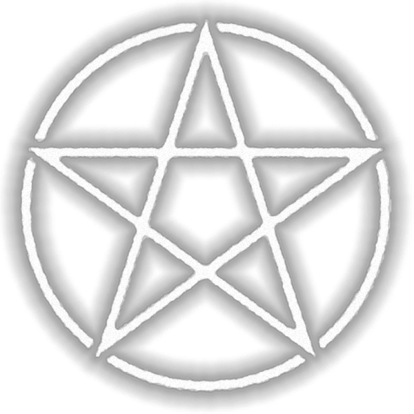
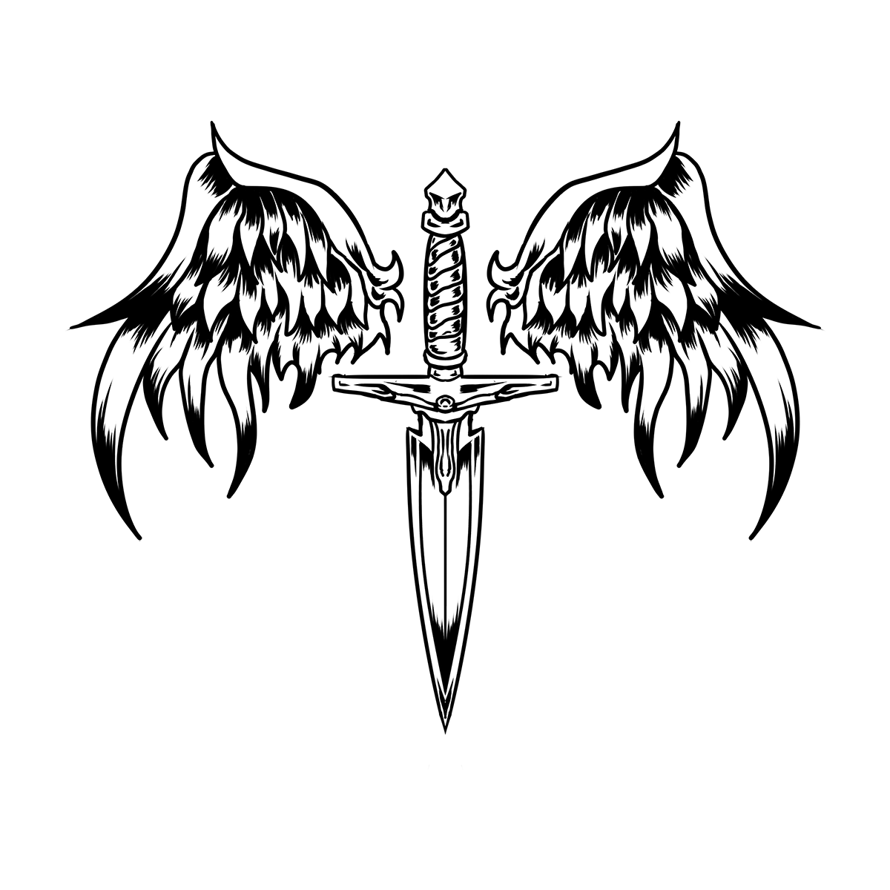
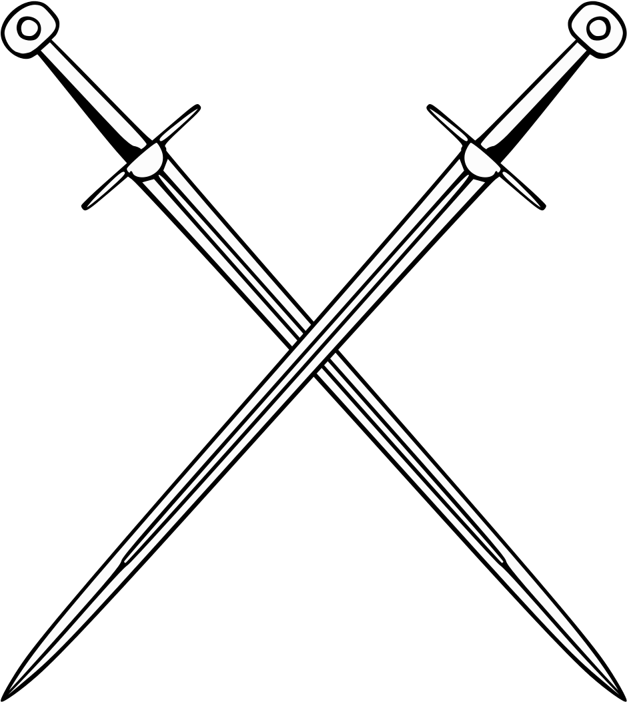
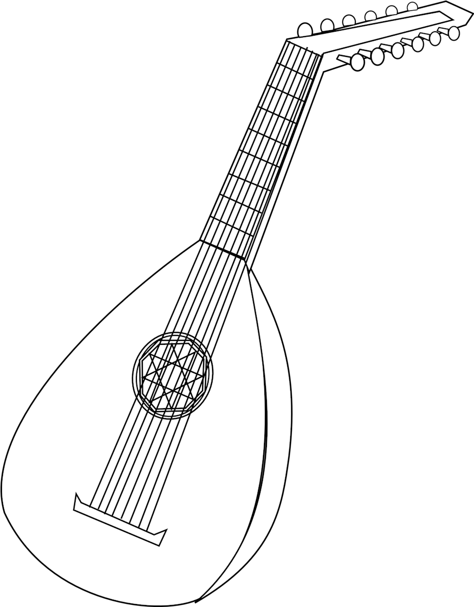
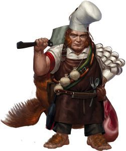
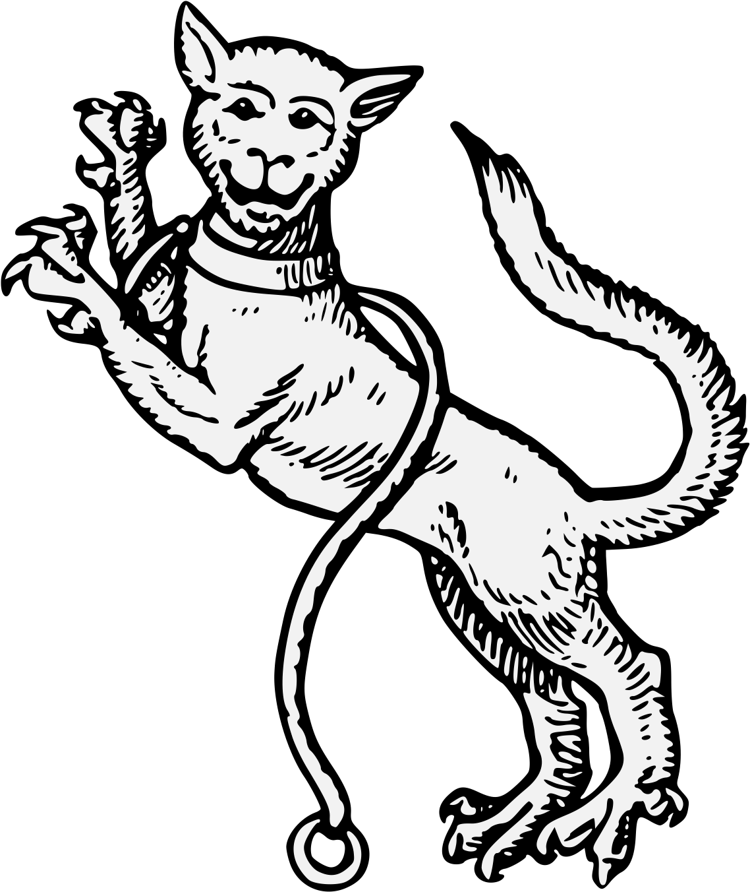
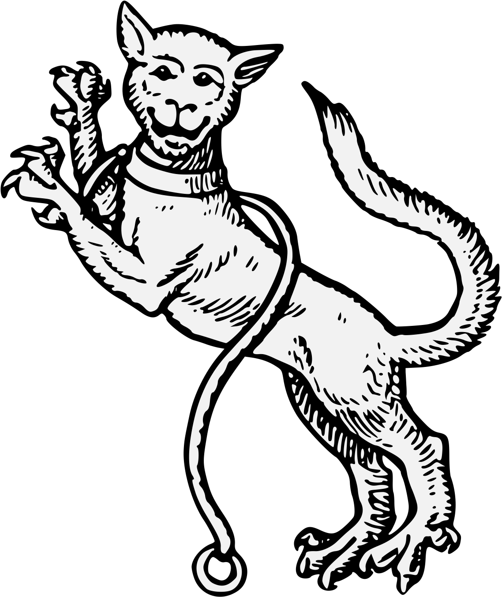

Personajes Principales de la historia
Feragun Liandon
Raza:
Semielfo
Edad (apariencia)
20 años
Estado actual
En el mundo del sueño buscando a su padre con Sam.

Historia:
Feragun es un semielfo originario de un pueblo llamado evergreen,tenia una casa pequeña a lasafueras del bosque.
desde pequeño tuvo un aprecio incalculable por el conocimiento magico, y su padre,Marlach el cual era un gran mago lo ayudo.
instruyendole en todo lo que sabia y debia aprender con sus capacidades.
Por otro lado, poco se sabe de su madre, la cual lo abandono cuando tenia menos de 2 meses de edad la cual
lo unico que dejo fue, un collar y un dibujo que marlach hizo de ella cuando estaban juntos.
La tragedia golpeo al muchacho cuando en su busqueda de conocimiento,su padre, se consiguio con un libro extraño
el cual al parecer, contenia una entidad maligna muy poderosa.
El joven no poseia conocimiento de esto, y cuando volvia del bosque en busca de hierbas se encontro con
su hogar completamente destruido
Despues de ese acontencimiento, vivio solo sin tener respuestas de lo sucedido
lo unico que le quedaba era el colgante de su madre el cual termino guiandolo hacia una ciudad llamada gelderland.
Galeria Feragun

Evergreen

dibujo de Varda

marlach

Libro maldito

Sam Hojasdete
Raza:
Mediana piesligeros
Edad
16 años
Estado actual
Esta siendo victima de vampirismo, actualmente esta en el mundo del sueño ayudando a Feragun

Historia:
Sam siempre fue una niña de las calles, al parecer quedo huerfana a temprana edad y se las rebusco siempre como pudo.
Dada su raza, siempre fue discriminada incluso por los parias, del callejon donde vivia. A exepcion de Frodo
un niño humano que mas temprano que tarde se termino volviendo su mejor amigo.
Paso el tiempo y debido al pequeño tamaño de ambos y su increible agilidad, el duo comenzo a ejecutar robos
pequeños en donde no habi heridos, solo tontos que estaban demasiado distraidos como para dejarse robar.
Obviamente, por su corta edad,inexperiencia e inmadurez, los jovenes se volvieron despreocupados y con
una abundante sobreconfianza. Lo cual los termino llevando a una situacion que cambiaria sus vidas para siempre.
Durante uno de sus robos, trataron con la persona equivocada, y Sam en sus desesperacion por ayudar a Frodo
termino por matar a la victima del robo, un hecho que cambiaria la vida de estos dos jovenes para siempre.
Al parecer, la persona que habian matado era un lacayo de un hombre de peso en el mundo criminal llamado Dumont.
el cual al conocer lo que lograron los jovenes, les ofrecio el que trabajaran para el, de lo contrario, moririan.
Sin ninguna opcion mas, los jovenes aceptaron, y a cambio, este hombre les dio casa, comida y libertad que no habian conocido en las calles
Pero una vez mas,la codicia los volvio a enrevesar, y cometieron el error de morder la mano que les daba de comer, guardando una parte del botin para ellos.
Cuando Dumont se entero de esto, tomo represalias contra el duo torturandolos hasta que confesaran. Frodo se mantuvo fuerte,
pero Sam no lo soporto y termino entregando a su amigo.
Una vez despierta, trato de buscar a su compañero, pero lo unico que consiguio fue la noticia de que Dumont
se habia "encargado de el."
Sin poder perdonarse su debilidad, Sam volvio a la vida antigua, perocon sus nuevas hablidades se hizo de un nombre en las calles y termino uniendose a un gremio en la ciudad de gelderland.
Galeria Sam

Frodo

Dumont
Graham
Raza:
Humano
Edad:
33 años
Estado actual
Buscando la base de Gelderland.

Historia:
Graham no es su nombre real, es el que le dio su "padre adoptivo" a la edad de 12 años, el era hijo de comerciantes viajeros que se movian por las rutas mantenidas, un noche oscura la caravana se perdió en un bosque desconicido, viajaron sin rumbo por 3 días, hasta que fueron emboscados por bandidos.
Graham vio como los bandidos masacraban a toda su familia y otros miembros de la caravana uno por uno, cuando estaba por ser su turno aparecio su salvador, que asesino a todos los bandidos en un abrir y cerrar de ojos.
El hombre confesó que estaba cazando a esos bandidos hace una semana, no se sabe si por pena o por culpa, decide adortar a Graham y llevarlo a su reino Gelherland, donde fue entranado desde el primer día en el arte de la espada, arco y lanza, además fue educado en diversas formas academicas como lo son las matemáticas, gramática y geografía, también en idiomas, aunque el único que consiguío dominar es el elfico. Debido al truma de su pasado, nunca a sido muy bueno relacionandose con otras personas, y tiene una actitud pesimista en muchos casos. No siente afecto por nada ni por nadie, excepto por sus armas.
Galeria Graham

padre de graham
Jackson Bell
Raza:
Semielfo
Edad (apariencia)
15 años
Estado actual
Buscando la base de Gelderland.

Historia:
Jackson vivía en el circo con sus padres, un día durante el festival de año nuevo decidieron dar una función en uno de los mas grandes reinos llamado Arcadia. Ante la magestuosidad del Show, él y su familia practicaron sin cesar, para dar su mejor espectáculo.
Pero ese mismo día, las cosas no fueron bien para Jackson, su truco que había estado trabajando durante meses en el trapecio no salió como él esperaba, cayéndose a la Red. Frustrado por su truco final decide, no seguir presenciando el show y irse a descansar a su carruaje.
rustrado por su truco final decide, no seguir presenciando el show y irse a descansar a su carruaje. Cuando despierta de su cama, se ve envuelto en llamas, Obligado a salir presenciar su mayor infierno. Su familía había quedado atrapada. Jackson sin nadie a que acudir se queda en la ciudad, merdoeando por las calles. Con su nuevo hogar el adoquín,alquitrán, piedras, vagones y el hambre que lo acompañaría según su experiencia eternamente.
Galeria Jackson

The flying bells

el circo
Jonas The Younger
Raza:
Humano
Edad
24 años
Estado actual
Actualmente es un servidor de los dioses antiguos
Historia:
Jonas no siempre fue jonas, primeramente fue un huerfano desde que era un bebé el cual nunca se dio un nombre, lo unico que tenia era una pandilla de amigos con los cuales realizaban
algunos hurtos menores, esta era para el la unica familia que tenia y se protegian mutuamente.
Un dia trataron de robarle a la persona equivocada, un hombre de gran tamaño el cual vencio a la pandilla
de un golpe a cada uno. Aunque, curiosamente, este hombre en vez de enviarlos con las autoridades, los invito a unirse
a un gremio al que el pertenecia.
Este hombre era nombrado Jonas, y era parte del gremio de cazadores de Gelderland.
Un dia, mientras realizaban una mision, todos fueron a dormir mientras el capitan hacia la guardia nocturna.
y jonas desperto encontrandose a sus compañeros y capitan, muertos.
Diez años despues y tras una investigacion se demostro su inocencia, aunque a regañadientes.
Galeria Jonas

Jonas the older
Volver arriba
Gremio de cazadores

El gremio de cazadores tiene una historia desconocida, no se sabe quienes lo fundaron o cual es el motivo de su existencia
pero si hay algo asegurado es que este lugar tiene un sinfin de secretos.
Su organizacion es bastante simple:
El circulo de Oficiales:

Es la mayor autoridad del gremio y esta compuesta de 4 miembros que son reemplazados por la muerte o la vejez. Gobiernan Gelderland tras las sombras
y casi no se encargan de los asuntos militares.
Los requerimientos para ser parte de este consejo son desconocidos para soldados de bajo rango, pero lo
que si es de publico conocimiento es que se debe ser portador de un gran poder para poder estar en el. Lo
que lleva a entender que si bien, no forman parte como tal del ejercito, son indivuos una fuerza increible.
Comandantes:

Son 8 en total y tienen a su cargo a 10 escuadrones cada uno. Se encargan de asignar las misiones y organizar
al personal a su cargo.
Deben su lealtad unica y exclusivamente al circulo, lo cual lleva a que en ocaciones envien escuadrones a morir
solo para cumplir misiones encomendadas y ganarse su favor. Se sabe que no todos son de esa manera pero losmas
ambiciosos solo se preocupan por ellos mismos.
Un factor que ellos no conocen es que el circulo de oficiales mide el exito de estos individuos en la cantidad
de escuadrones que pueden mantener con vida.
Lideres de escuadron:

Los Lideres de escuadron son los primeros en lanzarse a la batalla y marcan el ritmo de las mismas, se encargan de entrenar
a los escuadrones que tienen a su cargo y son el contacto con los comandantes.
Son conisederados ademas como unidades de elite altamente entrenadas en varios campos de la guerra y son ,a veces, enviados a cumplir
misiones en solitario cuando se considera que a sus escuadrones les falta fuerza para cumplir algo en conjunto.
Es raro que salgan al campo cuando las misiones son de bajo nivel, y por lo general delegan estas misiones a los capitanes
Capitanes:
Son los segundos al mando en el escuadron y tienen una relacion mas familiar con ellos.
Ayudan y toman el mando del Lider de escuadron cuando este se ausenta o cuando se sale al campo en misiones donde este no se encuentra
Miembros generales de Escuadron
Si bien todos los cazadores son exepcionales, los de menor habilidad o rango forman parte de los escuadrones como miembros regulares de estos
Cumplen las misiones encomendadas por sus comandantes y son los que mas ponen su vida en riesgo.
De hecho, sino se tiene la fuerza suficiente, la esperanza de vida como miembro util no supera los 5 años

Logistica
Aquellos miembros del gremio que por alguna razon no pueden, o no quieren luchar, se encargan de proveerles
a aquellos que si pueden.
Cocineros, herreros, lavanderos, alquimistas y medicos son tambien miembros del gremio y deben , y son, igualmente respetados
por sus compañeros activos en la batalla.

Consejo de Ulthar
El consejo de Ulthar gobierna dicha ciudad. Esta compuesto de 4 miembros, los cuales reencarnan cada vez que mueren de manera casi automatica
en el primer nacido que llega desde su muerte, mantienen ciertos rasgos de su aspecto, como raza o modos de comportamiento.
Tambien mantienen sus recuerdos, pero solo a partir de que comenzo su ciclo de reencarnacion, anterior a eso no recuerdan nada, ni siquiera sus nombres.
Cada uno es experto en su campo y se encargan, en cada una de sus vidas de seguir aumentando sus conocimientos y poder.
Manus:
 

Es el Clerigo del consejo, por lo cual es la autoridad en cuanto a religion en todo Ulthar. Es experto en
tecnicas de sanacion tanto mental como fisica.
Yalena

Maga y hechizera, es experta en estos dos campos, lo unico que lamenta es no recordar todo lo que su primer yo si recuerda.
Actualmente esta experimentando con cronomancia para recuperar esos recuerdos, pero ha resultado ser demasiado dificil para ella por alguna razon.
Thingol:

Experto en el combate cuerpo a cuerpo, es el mas reservado y solo se le ve hablar cuando es sumamente necesario.
Cain:

Es experto en manipulacion mental y alquimia, siempre ha sido de pocos amigos y detesta las faltas de respeto.
Su actitud, a veces demasiado agresiva le ha llevado a Ulthar a tener algunos problemas diplomaticos. Pero es bien sabido que no actuara de un modo en que el problema no pueda solucionarse.
Integrante ya fallecido: Bisou

No se sabe muy bien quien era, ya que los miembros no lo recuerdan muy bien.
Pero era un miembro del consejo que murio en una guerra contra los dioses antiguos al parecer, Manus fue quien lo reemplazo.